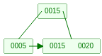
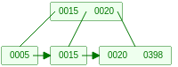
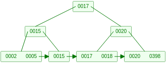
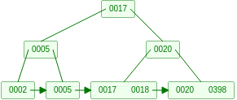
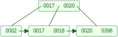
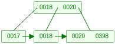

索引是存储引擎用于快速找到记录的一种数据结构。索引是按用户任意指定的字段对数据进行排序的一种数据结构。索引是为了加快查询的速度．
使用索引
- 优点
- 通过建立唯一索引或主键索引保证数据库中每一行数据的唯一性，提高检索的数据的效率以及减少表的检索行数
- 缺点：
- 创建索引和维护索引会浪费时间，随着数据量的增加而增加；
- 索引文件会占用磁盘空间(数据库索引存储在磁盘上)；
- 当对表中的数据进行增删改的时候，也需要动态地维护索引，这样会降低数据更新的速度．
- 适用的场景：
- 适合查询操作多于更新操作的场景．
- 表中数据量较大．
- 建立索引的字段应该有较多值，比如说实值．比如说，字段gender，只有两个值，男和女，就不适合建立索引．
- 索引类型
- 单列索引：一个索引只包含一个列；可以有多个单列索引；主键索引，唯一索引，普通索引
- 联合索引：一个联合索引包含两个或两个以上的列；当索引包含多个列时，列的顺序十分重要．因为存储引擎只能高效地使用最左前缀列．
- 查询类型
- B-Tree(实际上是B+树)索引适用于全键值，键值范围查询，键前缀查找(最左前缀查找)．
建立索引：
1 | 普通索引 create index 索引名 on 表名(字段名); |
B-tree索引
B树
数据库索引存储在磁盘上，当数据量比较大的时候，索引也很大，可能有几个G甚至更多。所以，索引往往以索引文件的形式存储在磁盘上。这样的话，索引查找过程中就需要进行磁盘IO。相对于内存存取，磁盘IO的开销要高几个数量级。所以，索引的组织结构应该尽量减少查找过程磁盘IO的存取次数。
当我们利用索引查询的时候，能把整个索引全部加载到内存吗？显然不可能，只能一页一页地加载磁盘页．这里的磁盘页对应着索引树的节点。
页是计算机管理存储器的逻辑块，硬件及操作系统往往将主存和磁盘存储分区分割为连续的大小相等的块，每个存储块称为一页，主存和磁盘以页为单位交换数据。当程序要读的数据不在主存中时，会触发一个缺页异常，此时系统会向磁盘发出读盘信号，磁盘会找到数据的起始位置并向后连续读取一页或几页载入内存中，然后然后，程序继续执行引发缺页异常的那条指令。
如果利用二叉查找树作为索引结构，假设二叉查找树的高度为n．那么最差情况下，要查询的节点是处于最深层次上的叶子节点，磁盘IO次数等于树的高度．为了减少磁盘IO次数，需要把原本”瘦高”的树结构变得”矮胖”，这就是B-树的特征之一。
B树是一种多路平衡查找树，它的每一个节点最多包含k个孩子，k被称为B树的阶。k的大小取决于磁盘页的大小。
一个m阶的B树具有如下特征：
１．根节点至少有两个孩子
２．每个中间节点都包含k-1个元素和k个孩子，其中m/2(向上取整) <= k <= m．
３．每一个叶子节点都包含k-1个元素，其中m/2(向上取整) <= k <= m
４．所有的叶子节点都位于同一层
５．每个节点中的元素从小到大排列，节点当中k-1个元素正好是k个孩子包含的元素的值域的分割．
B树在查询过程中的比较次数并不比二叉查找树少，尤其是当单一节点中的元素数量很多时。可是相比磁盘IO的速度，内存中的比较耗时几乎可以忽略．只要树的高度足够低，IO次数足够少，就可以提升查找性能。
在一个节点内的内部元素多一些也没有关系，只不过需要在内存中多做几次比较。
B树主要应用于文件系统及部分数据库索引，如非关系型数据库MongoDB．大部分关系型数据库，如mysql，使用B+树作为索引。
B树无论中间节点还是叶子节点都既有用于索引的关键字又有数据项(如数据表中的一行)。
B+树
一个m阶的B+树具有如下特征：
１．有k个子树的中间节点包含k个元素(B树中是k-1个元素)，每个元素不保存数据，只用来索引，所有数据都保存在叶子节点上（这里各个地方说法不一样）。
２．所有的叶子节点中包含了全部元素的信息，以及指向含这些元素记录的指针，且叶子节点本身依关键字的大小从小到大顺序链接(每一个叶子节点都包含指向下一个叶子节点的指针，从而方便叶子节点的范围遍历)。在同一个结构中保存索引和数据项时。此时，叶子节点包含一行的全部数据，中间节点只包含了索引列。 一个m阶的B树具有如下特征：
１．数据项存储在叶子节点上。 ２．非叶节点存储指示m-1个关键字指示搜索的方向；关键字i代表子树i+1中的最小的关键字(每一个父节点的元素都出现在子节点中，是子节点中的最大或最小元素，这里是最小)
３．树的根或者是一片树叶，或者其孩子数在2到m之间。
４．除根外，所有非叶节点的孩子数在[m/2](m/2向上取整)和m之间。
５．所有的叶子节点都位于同一层，并且每个叶子节点拥有的数据项的个数在[L/2]和L之间。B+树索引采用平衡树结构，从根节点到叶子节点的每条路径的长度相同。
L是能装入到一个磁盘块中的数据项个数。
B+树索引的增删过程
阶为3的B+树。只有三个元素15，15， 20，根节点用于索引，根节点中的元素为其右子树上最小元素的副本。

插入一个新元素398后整棵树成为这个样子：

插入新元素398后，右边这个节点有了三个元素15，20，398，超过了3阶B+树单个节点可以拥有的最大节点个数。之后分别插入2和18，此时B+树长这样：
之后若再插入任何元素都会使B+树加深一层。如插入17后，整棵树变为：

此后，删除元素15后，整棵树变为：

再次删除5之后，整棵树变为：

再删除2之后，整棵树变为：

B树和B+树的区别
B+树中数据项只存储在叶子节点中，所以，同样大小的磁盘有可以容纳更多的关键字元素。这意味着，数据量相同的情况下，B+树的结构比B树更加矮胖，因此查询时的IO次数更少。但是B+树的查询最终必须查找到叶子节点才能获取数据项，而B树只要找到匹配的元素即可。无论匹配元素是在中间节点还是叶子节点。
B树的查找性能并不稳定(最好情况是只查根节点，最坏情况是查到叶子节点)。而B+树的每一次查找都是稳定的。
B+树的优点主要体现在查询性能上。分别以单行查询和范围查询为例。
B+树的范围查询只需要找到上限和下限所在的叶子节点，然后对链表进行遍历。而B树的范围查询需要通过中序遍历。
总的来说，B+与B树相比，优点在于：
１．单一节点存储更多的(关键字)元素，使得查询的IO次数更少。
２．所有查询都要查询到叶子节点才能获取(关键字)元素对应的数据项，查询性能更加稳定。
３．所有叶子节点形成有序链表，便于范围查询。
哈希索引
哈希索引基于哈希表实现．只有精确匹配索引所有列的查询才有效。
对于每一行数据(即每一个记录)，存储引擎会对所有的索引列计算一个哈希码(hash code)。哈希索引将所有的哈希码存储在索引中，同时在哈希表中保存指向所有数据行的指针。
一般而言，对于不同的键值得出的哈希码是不同的，但是如果多个键值的哈希码相同，则将以链表的形式将多个记录指针存放到同一个哈希表条目中。
哈希索引的优缺点：
- 优点：索引中只存储对应的哈希值，索引的结构十分紧凑，所以哈希查找的速度非常快。
- 缺点：
- 哈希索引只包含哈希值和行指针，而不存储字段值，所以不能使用索引中的值来避免读取行
- 哈希索引数据并不是按照索引值顺序存储的，所以无法用于排序。
- 哈希索引不支持部分索引列匹配查找，因为哈希索引是使用所有索引列的全部内容来计算哈希值的。例如，在数据列(A,B)上建立哈希索引，如果查询只有数据列A则无法使用该索引
MySQL中索引的实现
在MySQL中，索引属于存储引擎级别的概念，不同存储引擎对索引的实现方式是不同的，本文主要讨论MyISAM和InnoDB两个存储引擎的索引实现方式。
MyISAM索引实现
MyISAM引擎使用B+Tree作为索引结构，叶节点的数据域存放的是数据记录的地址。下面是MyISAM索引的原理图：

这里设表一共有三列，假设我们以Col1为主键，则上图是一个MyISAM表的主索引（Primary key）示意。可以看出MyISAM的索引文件仅仅保存数据记录的地址。在MyISAM中，主索引和辅助索引（Secondary key）在结构上没有任何区别，只是主索引要求key是唯一的，而辅助索引的key可以重复。如果我们在Col2上建立一个辅助索引，则此索引的结构如下图所示：

同样是一棵B+树，数据域保存数据记录的地址。因此，MyISAM中索引检索的算法首先按照B+树搜索算法搜索索引，如果指定的key存在，则取出其数据域的值，然后以数据域的值作为地址，读取相应数据记录。
MyISAM的索引方式也叫做“非聚集”的，之所以这么称呼是为了与InnoDB的聚集索引区分。
InnoDB索引实现
虽然InnoDB也使用B+Tree作为索引结构，但具体实现方式却与MyISAM截然不同。
第一个重大区别是InnoDB的数据文件本身就是索引文件。从上文知道，MyISAM索引文件和数据文件是分离的，索引文件仅保存数据记录的地址。而在InnoDB中，表数据文件本身就是按B+树组织的一个索引结构，这棵树的叶节点数据域保存了完整的数据记录。这个索引的key是数据表的主键，因此InnoDB表数据文件本身就是主索引。
来自数据库系统概念P269
用于在文件中查找记录的属性或属性集称为搜索码。 如果包含记录的文件按照某个搜索码指定的顺序排列，那么该搜索码对应的索引称为聚集索引。聚集索引也称为主索引。 搜索码指定的顺序与文件中记录的物理顺序不同的索引称为非聚集索引或辅助索引。 搜索码上有聚集索引的文件称作索引顺序文件。 一个包含多个属性的搜索码称为复合搜索码。
稠密索引：在稠密索引中，文件中的每个搜索码值都有一个搜索项。
辅助索引必须是稠密索引，对每个搜索码值都有一个索引项，而且对文件中的每条记录都有一个指针。

上图是InnoDB主索引（同时也是数据文件）的示意图，可以看到叶节点包含了完整的数据记录。这种索引叫做聚集索引。因为InnoDB的数据文件本身要按主键索引，所以InnoDB要求表必须有主键（MyISAM可以没有），如果没有显式指定，则MySQL系统会自动选择一个可以唯一表示数据记录的列作为主键，如果不存在这种列，则MySQL自动为InnoDB表生成一个隐含字段作为主键，这个字段长度为6个字节，类型为长整形。
第二个与MyISAM索引不同的是InnoDB的辅助索引数据域存储相应记录主键的值而不是地址。换句话说，InnoDB的所有辅助索引都引用主键作为数据域。这里之所以在辅助索引数据域记录主键的值，而不是记录的地址，是因为当主索引文件中的叶子节点分裂或者删除时，需要进行记录的移动，这会造成记录地址的变化。如果在辅助索引数据域记录的是记录的地址，那么当叶子节点分裂或者删除叶子节点时需要对辅助索引数据域进行维护。但是叶节点可能包含相当多的记录，而其中的每条记录都可能在辅助索引中的不同位置，因此会造成巨大的IO开销。
例如，下图为定义在col3上的一个辅助索引：

这里以英文字符的ASCII码作为比较准则。聚集索引这种实现方式使得按主键的搜索十分高效，但是辅助索引搜索定位一条记录需要两步：首先用辅助索引找到主索引中搜索码的值（即主键），然后用主键到主索引中找到记录。
为什么在辅助索引中存储主索引搜索码的值，而不存储指向被索引的记录的指针呢？这是因为如果存储的是被索引的记录的指针，当B+树中的叶节点分裂时，一些记录需要移动到新节点中，那么此时所有存储了那些指向重定位的记录的指针的辅助索引也需要更新。每个叶节点可能包含相当多的记录，而其中每条记录都可能在每个辅助索引的不同位置。因此一个叶节点的分裂可能需要几十甚至几百次IO操作来更新所有影响到的辅助索引。但是如果存储的是主索引搜索码的值就不会导致这个问题了。
了解不同存储引擎的索引实现方式对于正确使用和优化索引都非常有帮助，例如知道了InnoDB的索引实现后，就很容易明白为什么不建议使用过长的字段作为主键，因为所有辅助索引都引用主索引，过长的主索引会令辅助索引变得过大。再例如，用非单调的字段作为主键在InnoDB中不是个好主意，因为InnoDB数据文件本身是一颗B+Tree，非单调的主键会造成在插入新记录时数据文件为了维持B+Tree的特性而频繁的分裂调整（分裂调整时需要创建新的叶子节点并移动记录），十分低效，而使用自增字段作为主键则是一个很好的选择。
唯一性索引和普通索引
索引使用策略及优化
MySQL的优化主要分为结构优化和查询优化。本章讨论的高性能索引策略主要属于结构优化范畴。
示例数据库
参考文献
[1] B+树：B+树
[2] B树：B树
[3] MySQL索引和SQL调优：https://zhuanlan.zhihu.com/p/76494612
[4]可视化插入和删除过程：https://www.cs.usfca.edu/~galles/visualization/BPlusTree.html
[5]MySQL索引背后的数据结构及算法原理：http://blog.codinglabs.org/articles/theory-of-mysql-index.html